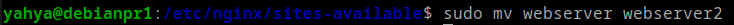
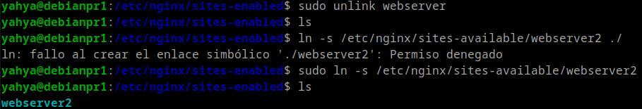
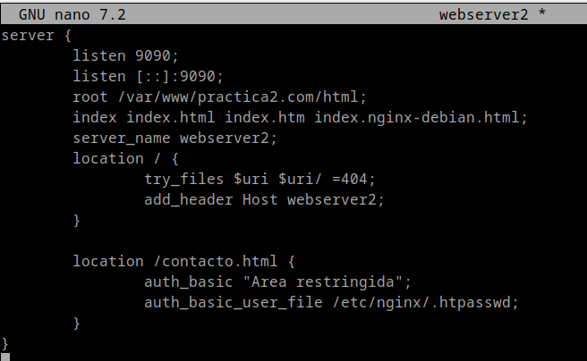
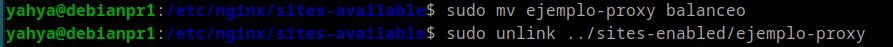
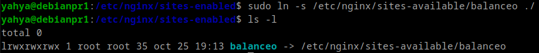
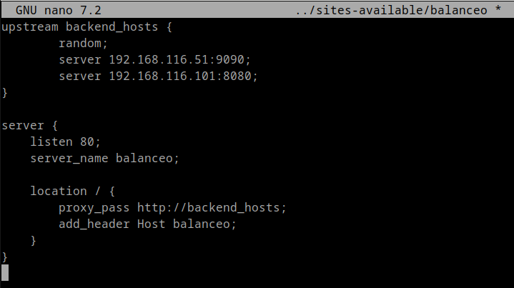
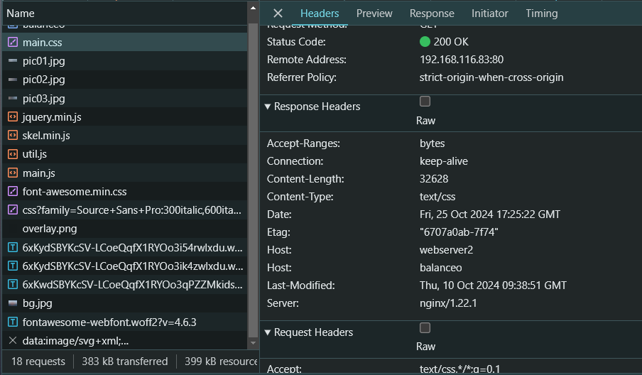
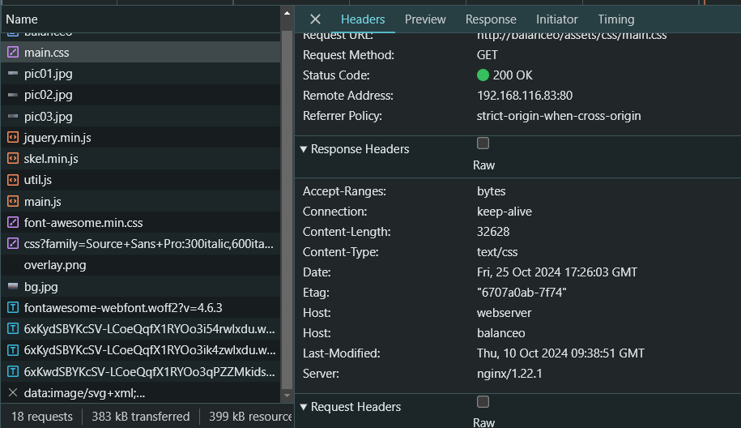

Practica 2.4
Introduccion
En esta practica vamos a configurar un servidor Proxy para el balanceo de peticiones, primero clonamos la máquina de Debian donde tenemos, configurado nuestro servidor web de las prácticas anteriores, de esa forma tendremos 2 servidores web, y ademas del anterior que clonamos par el proxy.
Ajustar el nuevo servidor web (webserver2)
Primero vamos a cambiarle el nombre al archivo de conf en /etc/nginx/sites-available a webserver2

Luego le quitamos el link simbolico anterior y lo volvemos a crear:

Y ahora:
-
Verificamos la sintaxis con el comando:
sudo nginx -t -
Reiniciamos el servicio de
nginxcon el comando:sudo systemctl restart nginx
Modificamos su configuracion:
Le ponemos el puerto 9090, y la cabezera webserver2

Configurar el PROXY:
Le cambiamos el nombre a su archivo de conf en /etc/nginx/sites-available por balanceo y le quitamos el link simbolico:

Creamos el nuevo link simbolico con el nuevo nombre y mostramos el resultado:

Configuramos el archivo de configuracion balanceo para que pueda distribuir las peticiones aleatoriamente:

-
random: Para elegir un server aleatoriamente de los indicados, en este caso son las IPs de webserver y webserver2. -
proxy_pass: Para dirigir las peticiones abackend_hostsque se encarga de elegir aleatoriamente uno de los servidores.
Hosts Anfitrion
Ahora ya ponemos la ip del PROXY en el hosts de windows que se encuentra en:
C:\Windows\System32\drivers\etc\hosts
Navegador
Nos metemos en el navegador de la maquina anfitriona y hacemos una peticion al proxy de balanceo.

Fijamos en las cabeceras Host se aprecia que la primera indica webserver2, y la segunda indica balanceo. Los cuales son los que hemos puesto en la configuracion de ambos.
Se ve que el PROXYha dirigido la peticion aleatoriamente al webserver2.
Mandamos otra peticion al PROXY y pinchamos F12.
Nos metemos en la seccion de Network vara visualizar las cabezeras de la respuesta.
